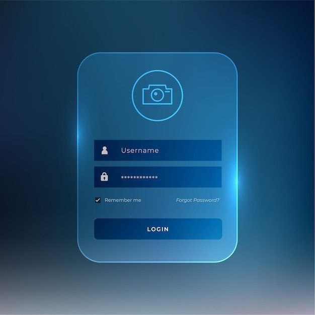
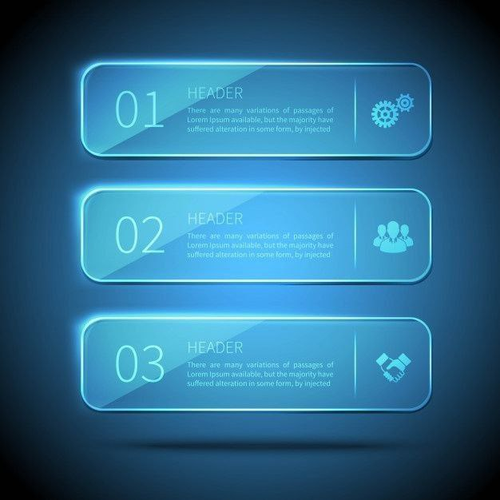
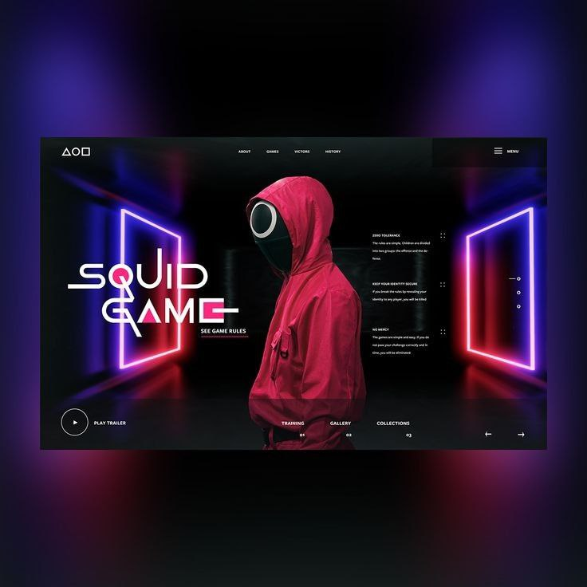
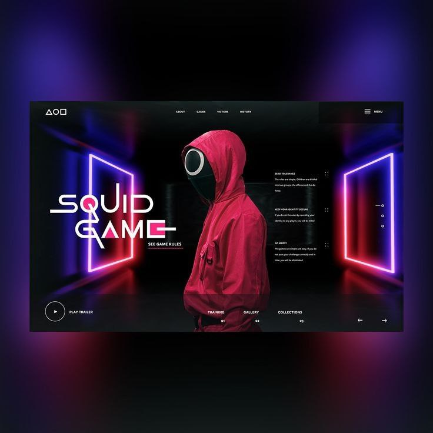

- web-development
- software-development
- goint to first page
Hey i am pankaj banik
contact no .+91 9351017304
Thankyou


Web Development Roadmapsbr
Front-End Roadmap
Web development is the work involved in developing a website for the Internet (World Wide Web) or an intranet (a private network). [1] Web development can range from developing a simple single static page of plain text to complex web applications, electronic businesses, and social network services.
To become a web developer, start with the subjects below, in the following order:
Html
1. Create your first web page The first thing you have to learn, is HTML, which is the standard markup language for creating web pages.
CSS describes how HTML elements should be displayed.
css
Our JavaScript Tutorial is designed for beginners and professionals both
java.script
10+ Best HTML Projects for Beginners in 2023 [with Source Code]
projects|


Web elements 3 glass plates for infographic on blue background

Dribbble is the world’s leading community for creatives to share, grow, and get hired.
 

Developer Roadmaps
System Design
python
java
c++
Backend Developer
Projects + Source Code in 2023 | Beginner to Pro
This CSS code snippet helps you to create business cards or team page cards with a flip effect. The cards come with linear-gradient background color and a smooth transition flip effect. The given HTML code can be used to create a team page on a website.
Simple Homepage With Wavy Background Animation | CSS Animation